ZH-001
Adminbase
ARMA 2 DayZ · Chernarus · 2013
Was 2013 als Zombiehölle begann,
ist heute die ZHServer Community.
Über zehn Jahre voller Erinnerungen.
Im Jahr 2013 entstand Zombiehölle als kleiner ARMA 2 DayZ-Server. Was zunächst als Treffpunkt einiger weniger Spieler begann, entwickelte sich über die Jahre zu einer Community, die weit über einen gewöhnlichen Gameserver hinausging.
Von DayZ über Epoch bis hin zu ARMA 3 und Exile – jedes Projekt brachte neue Spieler, neue Geschichten und unzählige Erinnerungen hervor.
Heute existieren viele dieser Server nicht mehr. Doch ihre Geschichte bleibt erhalten. Diese Webseite ist das digitale Archiv einer Community, die seit über zehn Jahren besteht.
ARMA 2 DayZ · Chernarus · 2013
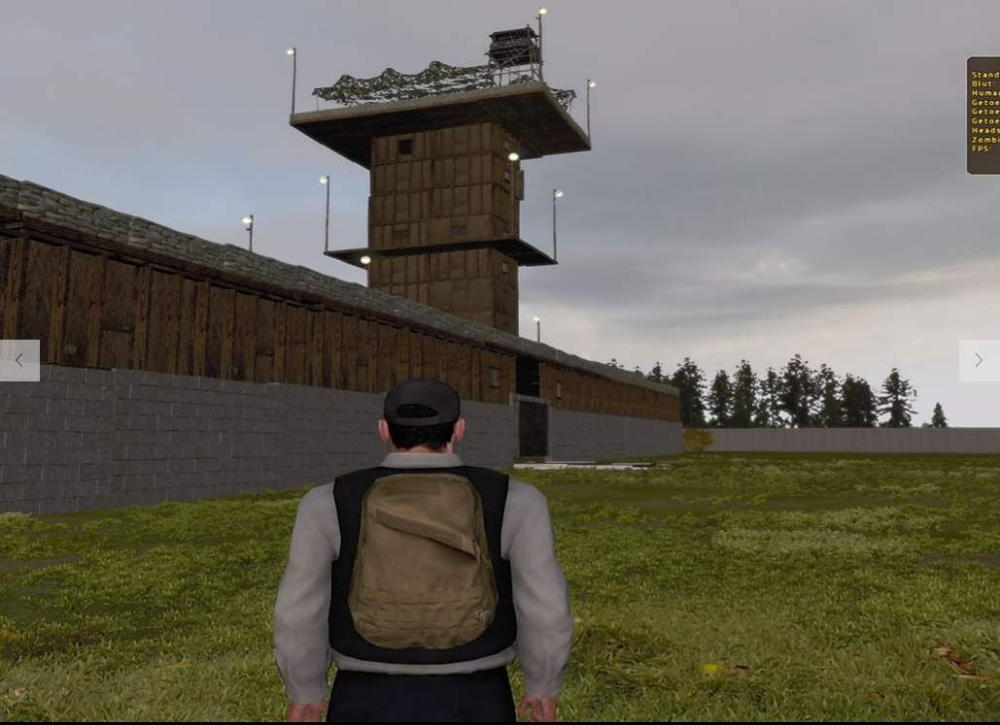
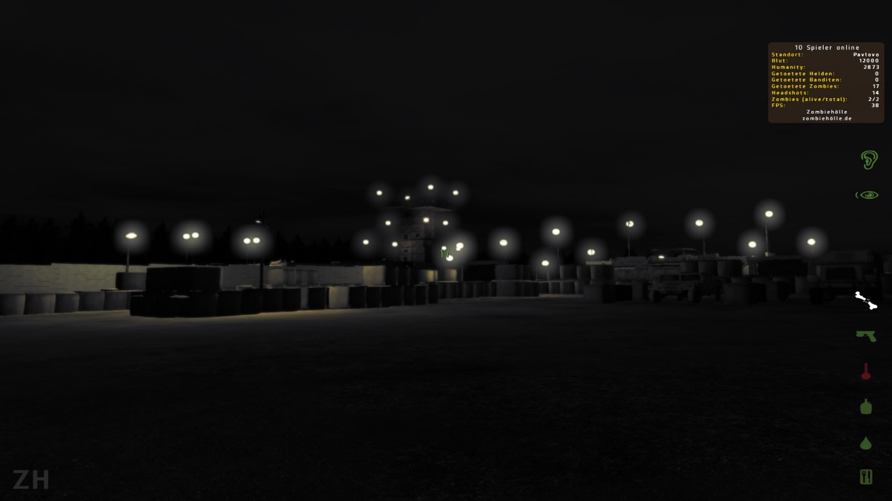
Die Adminbase war einer der zentralen Orte auf Zombiehölle. Hier wurde die Community organisiert, Events vorbereitet und viele Erinnerungen geschaffen.
Was als einfacher ARMA 2 DayZ Server begann, entwickelte sich zu einer Community mit eigenen Geschichten, Events und Spielern aus vielen Jahren.
ARMA 2 DAYZ · Zombiehölle
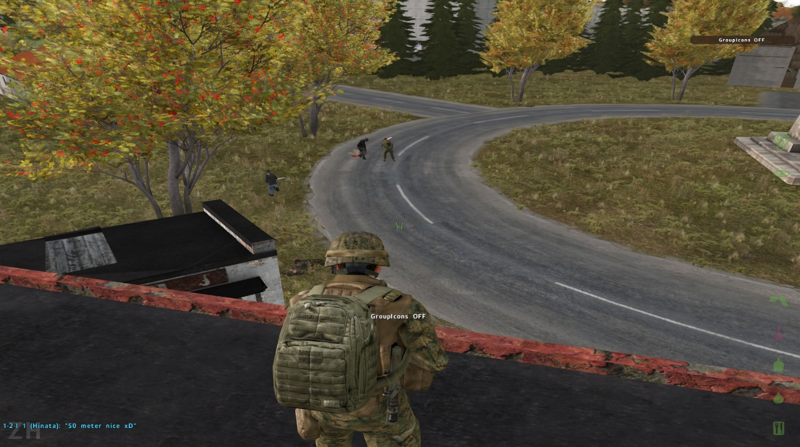
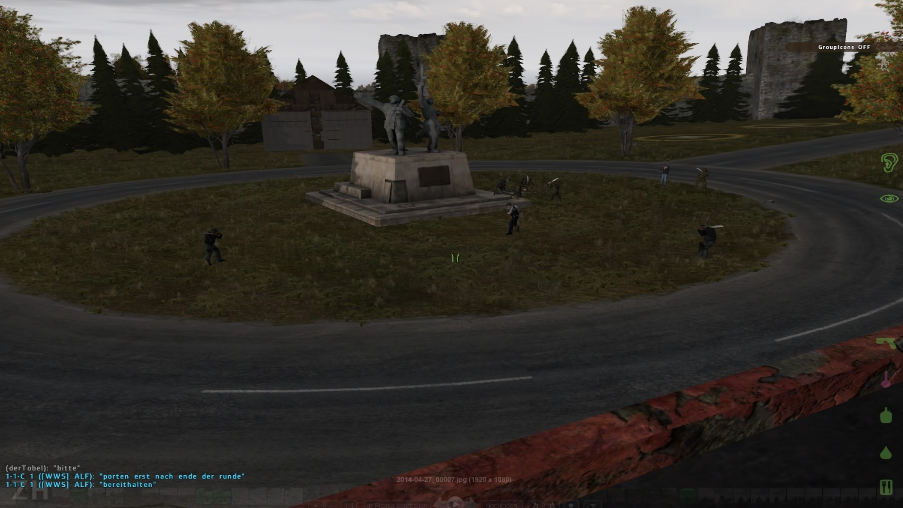
Manche Events brauchten keine komplizierten Regeln.
Beim Axt-Event bekam jeder Spieler die gleiche Ausrüstung: eine einzige Axt.
Keine Schusswaffen, keine Fahrzeuge, keine Vorteile. Nur Können, Taktik und der Wille, als letzter Spieler übrig zu bleiben.
Ein einfacher Gedanke, der zu einem besonderen Moment der Zombiehölle Community wurde.
ARMA 2 DAYZ · Zombiehölle
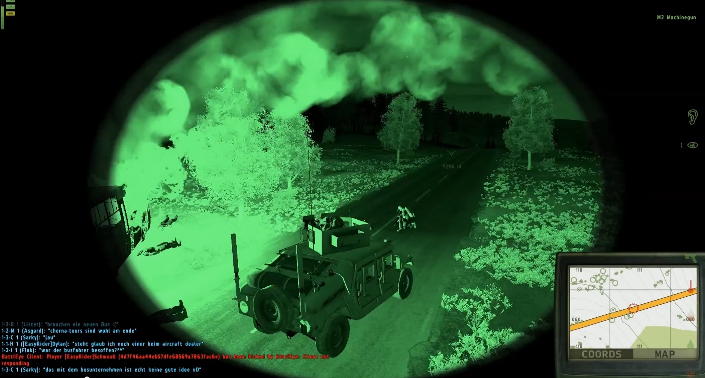
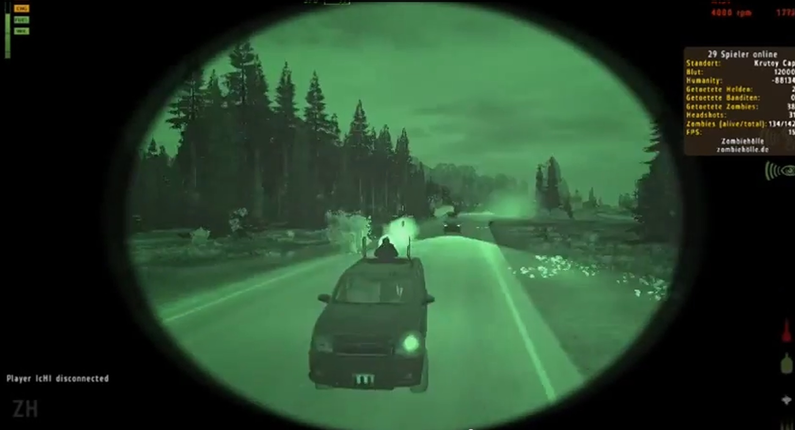
Nicht jedes Abenteuer brauchte ein großes Ziel.
Beim Convoy-Event waren mehrere Spieler gemeinsam mit Fahrzeugen unterwegs. Planung und Zusammenarbeit standen dabei im Mittelpunkt.
Ein weiterer Community-Moment aus der Zombiehölle-Geschichte.
▶ Video ansehenARMA 2 DAYZ · Zombiehölle
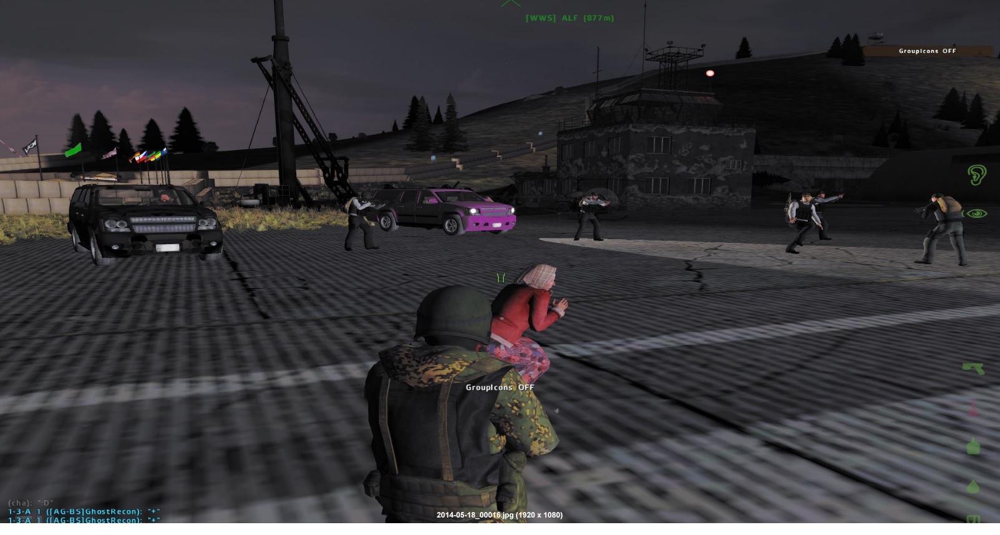
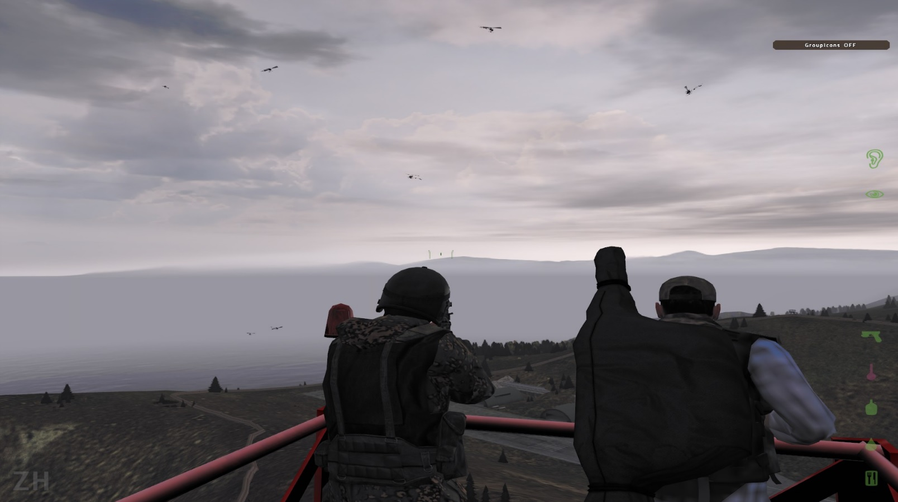
Bei diesem Event ging es hoch hinaus.
Mehrere Spieler traten mit Helikoptern gegeneinander an. Das Ziel: Als letzter Teilnehmer in der Luft zu bleiben.
Ein weiterer besonderer Moment aus der Geschichte der Zombiehölle Community.
ARMA 2 DAYZ · Zombiehölle
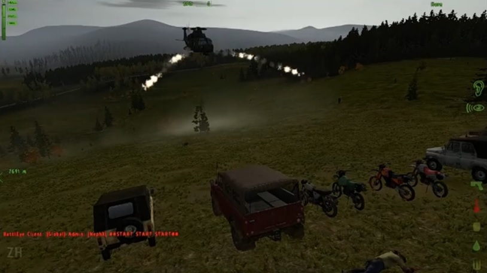
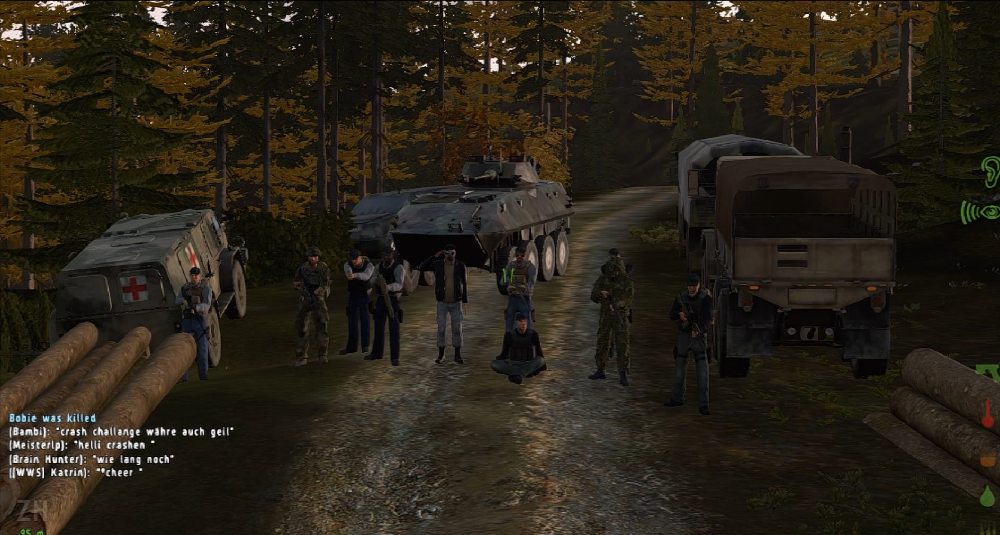
Die Spieler mussten eine vorgegebene Strecke durch Chernarus abfahren.
Dafür wurden eigene Hindernisse und Herausforderungen vorbereitet, die es zu bewältigen galt.
Ein weiteres Community-Event aus der Zombiehölle-Geschichte.
ARMA 2 DAYZ · Zombiehölle
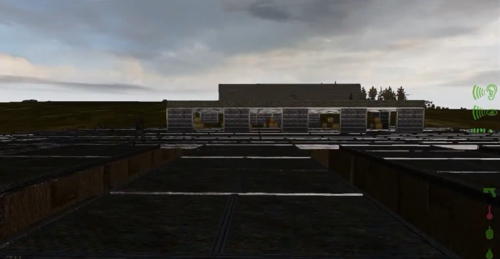
Ein besonderes Community-Event mit eigener Arena.
Die Spieler traten gegeneinander an und nur einer konnte am Ende gewinnen.
▶ Video ansehenARMA 3 · EXILE
Mit ARMA 3 Exile begann ein neues Kapitel der Community.
Neben dem normalen Spielbetrieb entstanden auch eigene Events wie das Team Deathmatch.
Spieler traten in Teams gegeneinander an und konnten sich in einem eigenen Spielmodus messen.
▶ Video ansehenARMA 3 · EXILE
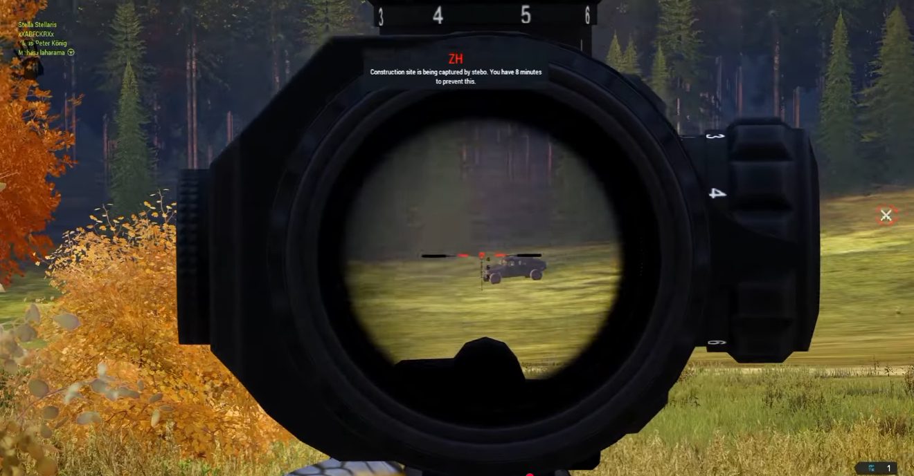
Ab und zu verirrte sich auch der ein oder andere Streamer auf unseren Server.
Einer dieser Besuche war von Moondye7 während der ARMA 3 Exile Zeit.
▶ Video ansehenEin besonderer Community-Moment
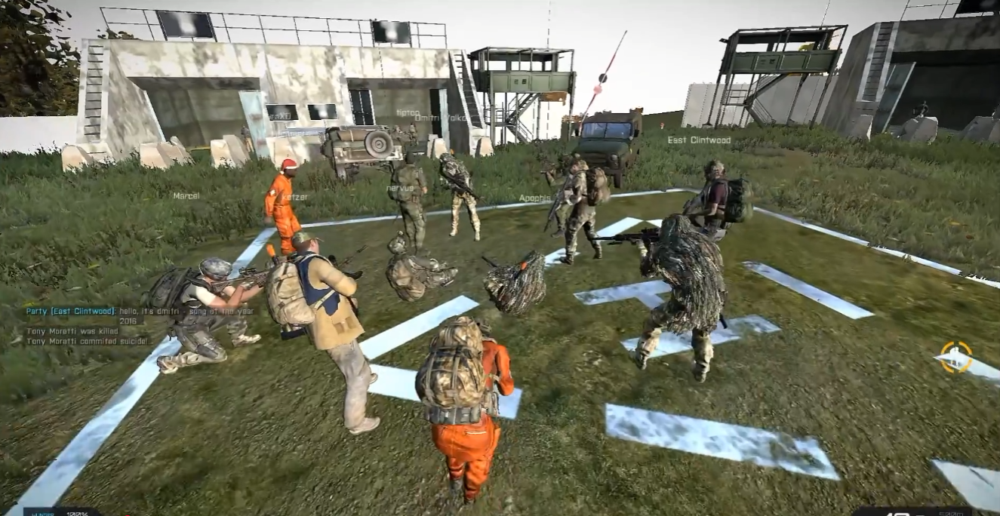
Manchmal entstanden besondere Momente ganz nebenbei.
In der Safezone versammelten sich Spieler, während ein Musiker spontan ein Lied vor der Community spielte.
▶ Video ansehenVerschiedene Karten aus der ARMA 3 Exile Zeit.
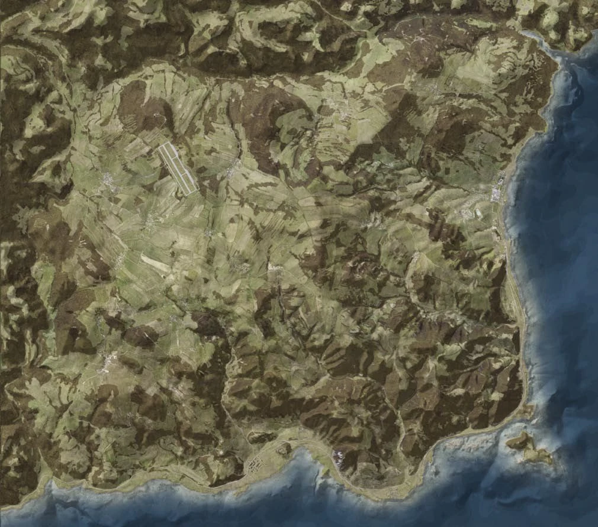
Eine der bekannten Karten aus der Zombiehölle-Zeit.
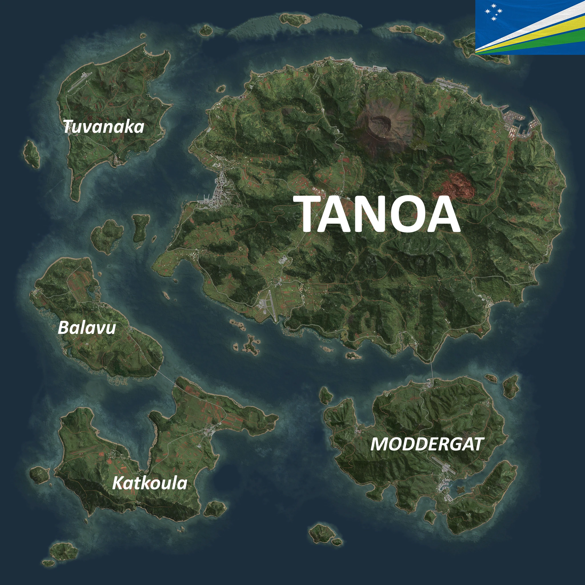
Eine weitere Welt während der ARMA 3 Exile Zeit.
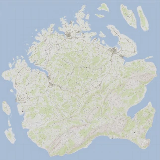
Eine weitere Karte aus der Exile-Zeit.
Der Anfang der Geschichte. Ein kleiner ARMA 2 DayZ Server auf Chernarus entwickelt sich zur ersten Community.
Erste große Erlebnisse, Basen, Events und gemeinsame Abenteuer.
Neue Projekte und Weiterentwicklung der Serverlandschaft.
Zombiehölle geht den nächsten Schritt und startet in eine neue Ära.
Die Geschichte wird bewahrt und die Erinnerungen bleiben erhalten.
ARMA 2 DayZ · Chernarus · 2013
Alte Screenshots aus der Community.
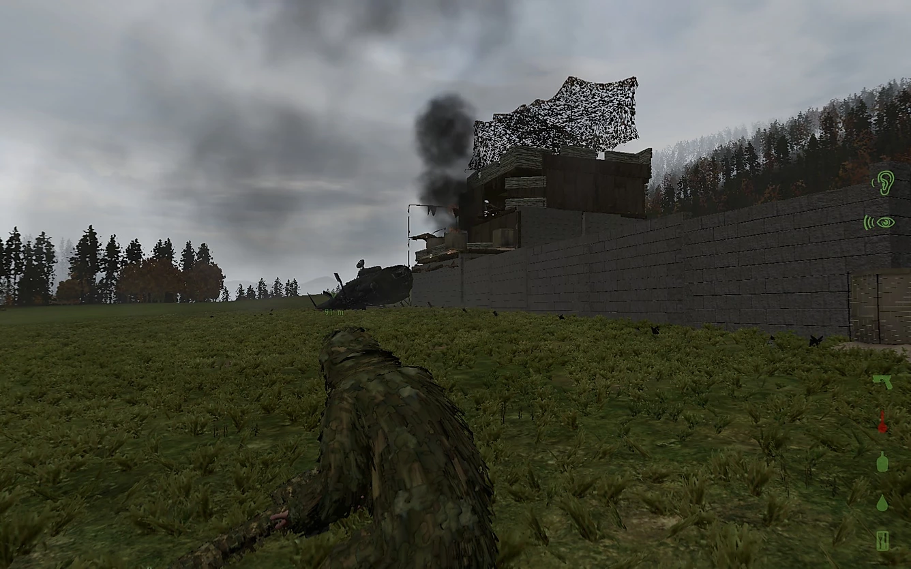
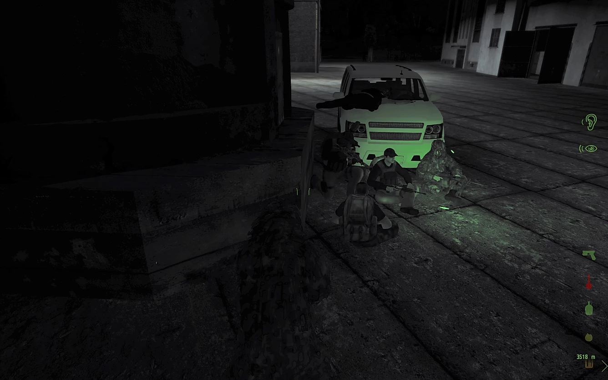
Alte Momente aus der Community.
Du warst Teil der ZHServer Community? Teile deine Erinnerungen, Grüße oder besonderen Momente mit anderen Spielern.
Hinweis: Neue Gästebucheinträge werden vor der Veröffentlichung geprüft und anschließend freigeschaltet.
Hier könnte dein Text stehen.
Freigeschaltet am 29.07.2026Das Forum bleibt der zentrale Treffpunkt für ehemalige und neue Mitglieder.
Zum Forum